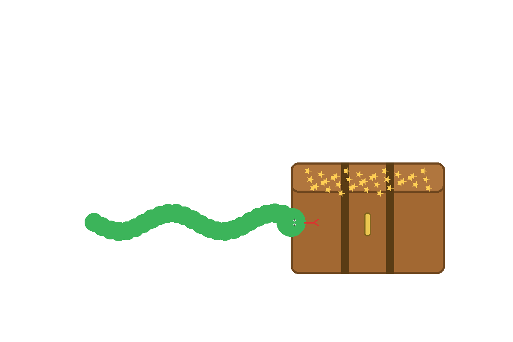

↠Back

Lesson 2: Treasure Chest (lists)
Why? A list is a treasure chest for many items. We’ll add a new gem and learn to grab the first and last like a pro.
Hint
gems = ["ruby","emerald","sapphire"] → gems.append("diamond") → print(gems[0], gems[-1])
Solution (peek only)
gems = ["ruby", "emerald", "sapphire"]
gems.append("diamond")
print(gems[0], gems[-1])